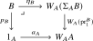
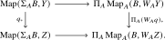
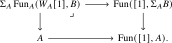
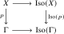

The dependent sum of a category in context \(A\) should come with a projection to \(A\), and the original category should be its fiber at the generic point of \(A\). We now impose axioms that express these properties. They will allow us to pass between categories in context \(A\) and categories over \(A\), together with their functors and identifications.
Axiom K.6 (The sum of the terminal category). For every anima \(A\), there is a specified equivalence \[ e_A\colon\Sigma_A1_A\iso A. \]
Construction 5.3.1 (Projection and generic point). Let \(B\) be a category in context \(A\), and write \(p_B\colon B\to1_A\) for its functor to the terminal category. We call \(\Sigma_AB\) its total category. Its first projection is the composite \[ \pr_1^B\colon\Sigma_AB\xrightarrow{\Sigma_Ap_B}\Sigma_A1_A\xrightarrow{e_A}A. \] We usually omit the superscript \(B\) when its source is clear.
To recover a family from its total category, we need to take the fiber at the variable \(a:A\). The following object of \(W_AA\) represents this variable and is called the generic point of \(A\): \[ a_A\colon1_A\xrightarrow{\eta_{1_A}}W_A(\Sigma_A1_A) \xrightarrow{W_Ae_A}W_AA. \] Applying (5.1) to \(p_B\) gives an identification \[ W_A(\pr_1^B)\circ\eta_B=a_A\circ p_B. \]
In what follows, we use categories and functors over \(A\) in the sense of Definitions 1.9.1 and 1.9.3. In particular, a functor over \(A\) includes an identification between the two composites to \(A\). We write \(\Map_{/A}(X,Y)\) for their absolute mapping anima, as in Definition 1.9.2.
Construction 5.3.2 (Generic fiber). Let \(p\colon X\to A\) be an absolute functor. Its generic fiber, denoted \(F_A(p)\), is the fiber of \(W_Ap\) at \(a_A\):
 A functor over \(A\) induces a functor between generic fibers by the universal property of this pullback. The identification to \(A\) supplies the commutative square needed for this construction. Identifications between functors over \(A\) likewise induce identifications between the functors on generic fibers.
A functor over \(A\) induces a functor between generic fibers by the universal property of this pullback. The identification to \(A\) supplies the commutative square needed for this construction. Identifications between functors over \(A\) likewise induce identifications between the functors on generic fibers.
We can now relate a category to the generic fiber of its total category. For a category \(B\) in context \(A\), the identity \(W_A(\pr_1^B)\eta_B=a_Ap_B\) induces a functor \[ r_B\colon B\longrightarrow F_A(\pr_1^B). \] In the other direction, the dependent-sum axiom extends \(j_p\colon F_A(p)\to W_AX\) to an absolute functor \[ s_p\colon\Sigma_AF_A(p)\longrightarrow X. \] This functor lies over \(A\). Indeed, restricting \(p\circ s_p\) along the pair functor gives \(W_Ap\circ j_p=a_A\circ p_{F_A(p)}\), which is also the restriction of \(\pr_1^{F_A(p)}\). The uniqueness clause for dependent sums therefore gives an identification \(p\circ s_p=\pr_1^{F_A(p)}\).
Axiom K.7 (Recovery from the total category and the generic fiber). For every category \(B\) in context \(A\), the functor \(r_B\) is an equivalence in context \(A\). For every absolute functor \(p\colon X\to A\), the functor \(s_p\) is an equivalence over \(A\).
In particular, the square

Lemma 5.3.3 (Relative mapping animae for dependent sums). Let \(B\) be a category in context \(A\), and let \(p\colon\Sigma_AB\to Z\) and \(q\colon Y\to Z\) be absolute functors. Regard \(B\) as a category over \(W_AZ\) by the functor \(W_Ap\circ\eta_B\). Then restriction along \(\eta_B\) induces an equivalence \[ \Map_{/Z}((\Sigma_AB,p),(Y,q)) \iso\Pi_A\Map_{/W_AZ}((B,W_Ap\circ\eta_B),(W_AY,W_Aq)), \] where the relative mapping anima on the right is formed in context \(A\).
Proof
The restriction equivalences of Proposition 5.2.4 fit into the following square, whose vertical functors are induced by postcomposition with \(q\):

More explicitly, a point \((h,\alpha\colon qh=p)\) in the source is sent to the functor \(W_Ah\circ\eta_B\) equipped with the identification \[ W_Aq\circ(W_Ah\circ\eta_B) =W_A(qh)\circ\eta_B \xrightarrow{(W_A\alpha)\star\eta_B}W_Ap\circ\eta_B. \] Since we obtained this map by taking fibers, it also sends identifications between functors to identifications compatible with these triangles. Its inverse recovers both the functor and its commutative triangle.
Proposition 5.3.4. For categories \(B,C\) in context \(A\), dependent sum induces an equivalence of absolute animae \[ \Pi_A\Map_A(B,C)\iso\Map_{/A}(\Sigma_AB,\Sigma_AC). \] Its inverse is induced by taking generic fibers and using \(r_B\) and \(r_C\).
Proof
We apply Lemma 5.3.3 with \(Z=A\), \(Y=\Sigma_AC\), \(p=\pr_1^B\), and \(q=\pr_1^C\). Since \(W_A(\pr_1^B)\circ\eta_B=a_A\circ p_B\), the relative mapping anima in context \(A\) is \[ \Map_A(B,F_A(\pr_1^C)). \] Indeed, a functor to this generic fiber consists of a functor to \(W_A\Sigma_AC\) and an identification of its composite to \(W_AA\) with \(a_Ap_B\). The equivalence \(r_C\colon C\iso F_A(\pr_1^C)\) identifies this anima with \(\Map_A(B,C)\).
For a functor \(u\colon B\to C\) in context \(A\), the defining square for \(\Sigma_Au\) identifies its restriction with \(\eta_Cu\). Composing this square with \(W_A(\pr_1^C)\) and using the identities for the first projections gives the triangle over \(W_AA\). By the uniqueness clause for restriction, it determines the required identification \[ \pr_1^C\circ\Sigma_Au=\pr_1^B. \] Thus the functor over \(A\) obtained above is \(\Sigma_Au\) together with its natural identification to the base. In the other direction, we take generic fibers and use \(r_B\) and \(r_C\).
In light of the previous result, we may freely pass back and forth between categories in context \(A\) and categories over \(A\), including their functors and identifications. We first spell out what this means for constant families and objects.
Corollary 5.3.5. For every absolute category \(C\), there is an equivalence over \(A\) \[ (\pr_1^{W_AC},d_C)\colon\Sigma_AW_AC\iso A\times C. \]
Proof
Apply Proposition 5.2.5 with \(B=1_A\) and use \(e_A\). The resulting components are the first projection and \(d_C\).
Corollary 5.3.6. Let \(B\) be a category in context \(A\). Objects of \(B\) in that context, or equivalently absolute objects of \(\Pi_AB\), correspond to sections of \(\pr_1^B\colon\Sigma_AB\to A\), compatibly with identifications.
Proof
Apply Proposition 5.3.4 to \(1_A\) and \(B\), and use \(e_A\).
Corollary 5.3.7. For an absolute category \(C\), objects of \(W_AC\) in context \(A\) correspond to absolute functors \(A\to C\).
Proof
Apply Corollary 5.3.5.
Remark 5.3.8. For \(A=*\), we obtain equivalences \(\Sigma_*W_*C\simeq C\) for an absolute category \(C\), and \(B\simeq W_*\Sigma_*B\) for a category \(B\) in context \(*\). The first follows from Corollary 5.3.5, while the second follows from the generic-fiber axiom, since \(W_*(*)\) is terminal. Together with their action on functors and identifications, these equivalences allow us to pass between the absolute theory and the theory in terminal anima context.
The correspondence also describes diagrams in a family: these are diagrams in its total category equipped with an identification of their projection to \(A\) with a constant diagram. For a fixed absolute shape, this is expressed by the following pullback.
Lemma 5.3.9. Let \(C\) be a category in context \(A\), and let \(K\) be an absolute category. There is an equivalence over \(A\) \[ \Sigma_A\Fun_A(W_AK,C) \simeq A\times_{\Fun(K,A)}\Fun(K,\Sigma_AC), \] where \(A\to\Fun(K,A)\) assigns constant diagrams. It is compatible with restriction along functors between the shapes \(K\).
Proof
Take the generic fiber of the category on the right. Preservation of functor categories and pullbacks by weakening identifies it with the pullback \[ 1_A\times_{\Fun_A(W_AK,W_AA)}\Fun_A(W_AK,W_A\Sigma_AC). \] Here the map from \(1_A\) selects the constant diagram at \(a_A\). Since \(\Fun_A(W_AK,-)\) preserves pullbacks, this is equivalent to \[ \Fun_A(W_AK,1_A\times_{W_AA}W_A\Sigma_AC) \simeq\Fun_A(W_AK,C). \] By Axiom K.7, taking total categories now gives the required equivalence over \(A\). For a functor \(L\to K\), restriction preserves constant diagrams and commutes with the projections in the displayed pullbacks, and so the resulting equivalence respects restriction.
To apply this correspondence to adjunctions, we also need compatibility with precomposition and postcomposition. We check this using the description of functors between total categories proved above.
Lemma 5.3.10. The correspondence between functors in context \(A\) and functors over \(A\) respects precomposition and postcomposition, including the identifications to the base. Moreover, applying these two operations in either order results in identified functors, compatibly with the correspondence.
Proof
We work with the relative mapping animae in the proof of Proposition 5.3.4. For functors \(u\colon B'\to B\) and \(h\colon\Sigma_AB\to Y\), compatibility with precomposition is expressed by the identification \[ W_A(h\circ\Sigma_Au)\circ\eta_{B'} = W_Ah\circ W_A(\Sigma_Au)\circ\eta_{B'} = W_Ah\circ\eta_B\circ u. \] The second step uses the defining square for \(\Sigma_Au\). Compatibility with postcomposition by a functor \(q\colon Y\to Z\) is expressed by an identification between two pastings of this square. Using the abbreviations \(v=\Sigma_Au\), \(\eta'=\eta_{B'}\), and \(\eta=\eta_B\), we need to compare the composite identification \begin{align*} W_A(q(hv))\eta' =W_Aq\bigl(W_A(hv)\eta'\bigr) =W_Aq\bigl(W_Ah(W_Av\eta')\bigr) =W_Aq\bigl(W_Ah(\eta u)\bigr) \end{align*} with the composite identification \begin{align*} W_A(q(hv))\eta' =W_A((qh)v)\eta' =W_A(qh)(W_Av\eta') =W_A(qh)(\eta u)=W_Aq\bigl(W_Ah(\eta u)\bigr). \end{align*} This is done by combining the various identifications specified in Section 5.1.1. For example, the fact that \(W_A\) preserves the associator identifies the two ways of expanding \(W_A(q(hv))\). Naturality of the identification \(W_A(hv)=(W_Ah)(W_Av)\), together with whiskering applied to \(W_Av\eta'=\eta u\), identifies the subsequent steps. Finally, pasting these identifications with the image of \(qh=p\) under weakening shows that the two calculations agree over the base.
All these constructions are made on mapping animae. Evaluating on a parameterized family therefore gives the same identities for families of functors and for identifications between them.
We can now describe which sections of a total category correspond to terminal objects in the family.
Proposition 5.3.11 (Terminal objects and adjoint sections). Let \(C\) be a category in context \(A\), and let \(t\colon1_A\to C\) be an object in that context. Let \(s\colon A\to\Sigma_AC\) be the corresponding section of \(\pr_1^C\), with identification \(\varepsilon\colon\pr_1^C s=\id_A\). The following conditions are equivalent:
(1) The object \(t\) is terminal in \(C\) in context \(A\).
(2) In context \(A\), the functor \(t\) is a right adjoint section of \(p_C\colon C\to1_A\).
(3) The functor \(s\) is a right adjoint section of \(\pr_1^C\), with counit \(\varepsilon\).
The dual statements hold for initial objects and left adjoint sections.
Proof
The equivalence of (1) and (2) is the dual of Lemma 4.4.19, applied in context \(A\).
To compare (2) and (3), we also need the correspondence for natural transformations. For categories \(B,D\) in context \(A\), apply Proposition 5.3.4 to \(B\times W_A[1]\) and \(D\). The Frobenius equivalence \[ \Sigma_A(B\times W_A[1])\simeq\Sigma_AB\times[1] \] identifies a natural transformation in context \(A\) with a natural transformation of the corresponding total functors over \(A\). By Lemma 5.3.9, this correspondence respects restriction of diagrams, and thus in particular sources, targets, identities, and composition. The required compatibility with precomposition and postcomposition is supplied by Lemma 5.3.10. It therefore also transports units, counits, and their triangle identities.
Write \(\pr_1=\pr_1^C\) for the rest of the proof. A unit \(\id_C\to t p_C\) in context \(A\) corresponds to a transformation \[ \eta\colon\id_{\Sigma_AC}\longrightarrow s\pr_1 \] over \(A\). This being a transformation over \(A\) means that \((\varepsilon\pr_1)(\pr_1\eta)=\id_{\pr_1}\), which is the triangle identity at \(\pr_1\). The triangle identity at \(t\) corresponds to an identification \((s\varepsilon)(\eta s)=\id_s\). We conclude that the adjunction in context \(A\) is precisely an adjunction \(\pr_1\dashv s\) with counit \(\varepsilon\). Conversely, that counit and the first triangle identity turn its unit into a transformation over \(A\), so the same correspondence recovers the adjunction in context \(A\).
By the proposition, a terminal object \(t(a)\) of a family of categories \(C(a)\) over \(A\) is encoded by a right adjoint section of \(\pr_1^C\colon\Sigma_AC\to A\). Similarly, \(C\) is contractible in context \(A\) if and only if \(\pr_1^C\) is an equivalence. To see this, apply the correspondence to the terminal functor \(p_C\colon C\to1_A\): its total functor is \(\Sigma_Ap_C\), and this becomes \(\pr_1^C\) under the equivalence \(e_A\colon\Sigma_A1_A\iso A\).
Example 5.3.12 (Fibers). The preceding results allow us to speak of the fiber at an arbitrary object just as we would at an absolute object. Let us spell out how statements about this fiber translate into statements about categories over its anima of parameters.
Let \(f\colon C\to D\) be a functor and \(x\colon A\to D\) an object. In context \(a:A\), we may regard \(x\) as an absolute object of \(D\), omitting weakening from the notation, and form the fiber \(C_x\). Its total category is equivalent over \(A\) to the pullback \[ A\times_D C\longrightarrow A. \] Indeed, preservation of pullbacks by weakening identifies the generic fiber of this projection with \(C_x\), so this follows from Axiom K.7.
By Corollary 5.3.6, an object of \(C_x\) in context \(A\) corresponds to a section of this projection. The terminal-object correspondence of Proposition 5.3.11 and the contractibility criterion following it give:
(1) The fiber \(C_x\) is contractible in context \(A\) if and only if \(A\times_D C\to A\) is an equivalence in the original context.
(2) An object of \(C_x\) is terminal if and only if its corresponding section is a right adjoint section, with the section identification as counit.
Thus, when we write “let \(x\) be an object of \(D\) and form the fiber \(C_x\)”, we work in the context of \(x\). The translations above express these fiberwise assertions in the original context, where \(x\) is a functor \(A\to D\).
We next check how taking total categories interacts with pullbacks and with the condition of being an anima.
Proposition 5.3.13 (Pullbacks of total categories). Dependent sums preserve pullbacks. Moreover, every square (5.1) is a pullback.
Proof
Pullbacks of categories over \(A\) are computed on their total categories. Taking generic fibers preserves these pullbacks: weakening preserves pullbacks, and taking the fiber at \(a_A\) does so as well. Since generic fibers and total categories are inverse constructions by Axiom K.7 and Proposition 5.3.4, taking total categories also preserves pullbacks.
For the second assertion, express both \(B\) and \(C\) as the pullbacks of \(W_A\Sigma_AB\) and \(W_A\Sigma_AC\) along \(a_A\). The square in question is the resulting pullback square between these two fibers.
Lemma 5.3.14. A category \(B\) in an anima context \(A\) is an anima if and only if its total category \(\Sigma_AB\) is an anima.
Proof
By Lemma 5.3.9, the total category of the arrow category of \(B\) is given by a pullback square

Corollary 5.3.15 (Isomorphisms in a family). For a category \(C\) in context \(A\), the total category of its category of isomorphisms is \[ \Sigma_A\Iso_A(C)\simeq A\times_{\Iso(A)}\Iso(\Sigma_AC), \] where \(A\to\Iso(A)\) assigns the identity isomorphism. We also denote the category on the right, over \(A\), by \(\Iso_{/A}(\Sigma_AC)\).
Proof
Apply Lemma 5.3.9 to the diagram categories in the definition of \(\Iso\). The equivalences respect restriction maps, and generic fibers and total categories preserve the pullbacks used in that definition. Thus the category on the right has generic fiber \(\Iso_A(C)\), and Axiom K.7 gives the asserted equivalence.
Remark 5.3.16 (Diagrams over a base). The pullback description of diagrams in a family also makes sense over an arbitrary base category. Let \(p\colon X\to\Gamma\) be a functor and let \(K\) be an absolute category. The category \[ \Gamma\times_{\Fun(K,\Gamma)}\Fun(K,X) \] describes \(K\)-shaped diagrams in \(X\) equipped with an identification of their image in \(\Gamma\) with a constant diagram. Here \(\Gamma\to\Fun(K,\Gamma)\) assigns constant diagrams. Thus these are diagrams lying over a single object of \(\Gamma\).
For example, the category of isomorphisms in \(X\) equipped with an identification of their image with an identity in \(\Gamma\) is
\[
\Gamma\times_{\Iso(\Gamma)}\Iso(X).
\]
The identity-isomorphism functor induces an equivalence from \(X\) to this category over \(\Gamma\). Indeed, the naturality square
